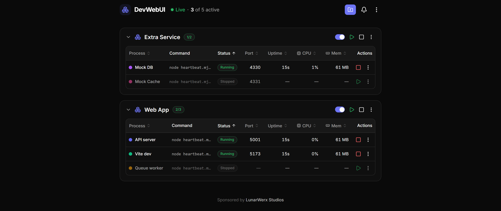

DevWebUI starts, stops and restarts your projects' dev servers — with live status, CPU, memory and logs. Click to run them yourself, or let your AI agents drive the same daemon over MCP.

.devwebuiList your repo's dev servers in one small file.
Every process, grouped by project, with live status.
Start, stop, restart. Your AI does the same over MCP.
Start, stop, restart any dev server. Live status, CPU, memory and logs — no shell required.
31 tools let AI agents drive the same daemon you click. Humans and agents, one source of truth.
Drop a .devwebui file — every process groups under one panel, remembered on restart.
Detects clashes, names the process holding the port, and frees it in one click.
A persisted, de-duplicated error log survives restarts and crashes — and agents can read it too.
A Windows tray app boots the daemon hidden — no console window. Open, rebuild, restart, quit.
Click to run your servers. Watch status, CPU, memory and logs in one pane — no terminal juggling.
31 tools drive the exact same daemon. Humans and AI share one state — zero drift, nothing to sync.
Runs entirely on your machine. No accounts, no cloud, nothing to sign up for — just a daemon on your localhost. Open source under MIT. On the roadmap: macOS / Linux tray, in-GUI env editor, log search and multi-host.
DevWebUI is open source under the MIT License. Core functionality needs no account and no cloud, and it runs entirely on your machine as a single daemon on your localhost. There's an optional settings-sync extra you can turn on later if you want your preferences to follow you across machines.
No. DevWebUI runs entirely on your machine as a single daemon on your localhost, and core functionality needs no account and no cloud. There are two optional extras: settings sync, which is off by default until you enable it in Settings, and an anonymous install ping used for update checks, which you can turn off by setting DEVWEBUI_NO_PING=1.
Yes. DevWebUI ships an MCP server with 31 tools so AI agents can drive the same daemon you click. Your AI can start, stop and restart servers the same way you do, and read the persisted, de-duplicated error log too. Humans and agents share one source of truth, so nothing drifts between the GUI and your agent.
A .devwebui file lists a repo's dev servers in one small file, dropped in the repo root. It groups every process under one collapsible header in the pane, and projects auto-reload the next time you launch DevWebUI. You can edit the list from inside the GUI too — DevWebUI writes changes back to the file.
Yes. DevWebUI detects clashes on a port, names the process holding it, and frees it in one click — no shell required. This sits alongside DevWebUI's live status, CPU, memory and log view for every process it manages, so a blocked dev server is easy to spot without hunting for the culprit at a terminal.
bun run devDrop a .devwebui file in your repo, open the pane, and hand the same controls to your agents.